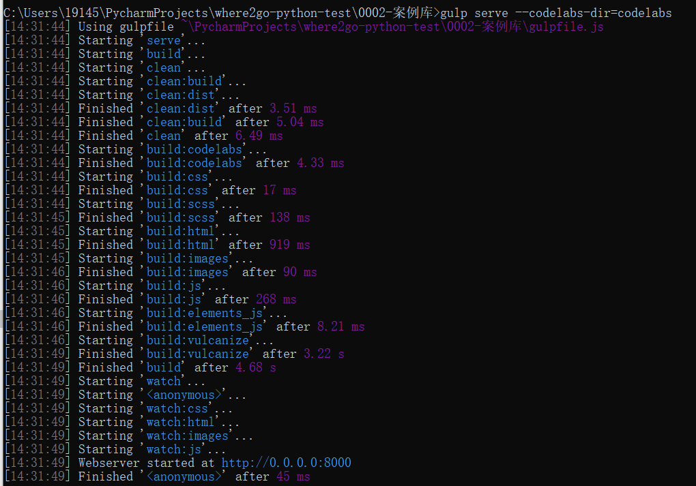
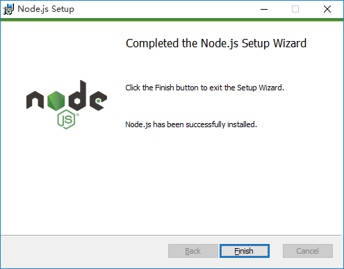
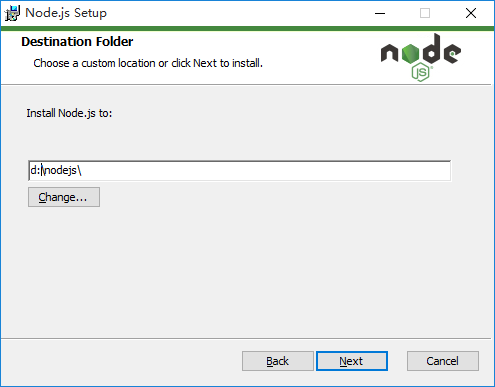
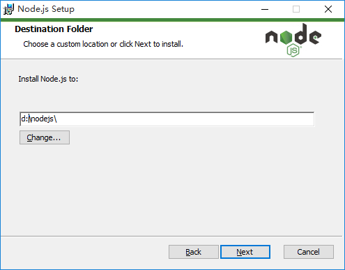
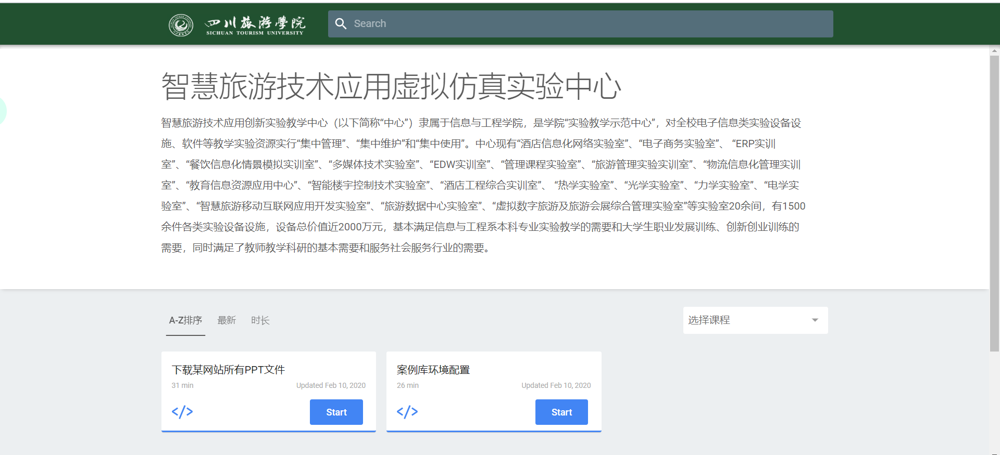

效果图

你将学到什么
- 本地配置案例库
你需要准备什么
- 安装 Nodejs
- 安装 npm
- 安装 gulp
gulp的基本知识
本地配置案例库
安装Nodejs
进入 http://nodejs.org/en 下载 12.15.0LTS
完成后双击安装
 

打开CMD检查是否正常
安装npm

输入命令npm config set registry=http://registry.npm.taobao.org 配置镜像站
安装gulp
全局安装Gulp cnpm install gulp -g
检查版本 gulp -v
本地安装gulp，作为开发依赖 cnpm install gulp -D
案例实现
用管理员身份打开cmd，进入到0002-案例库目录下
输入命令：npm install
等待全部安装好后 输入命令 gulp serve –codelabs-dir=codelabs
最后打开浏览器输入地址：127.0.0.1：8000

```
打开上述链接，对问题进行详细的描述，我们在收到问题后，第一时间予以解答。